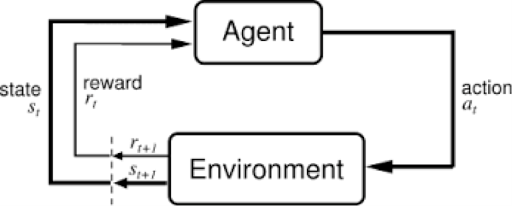
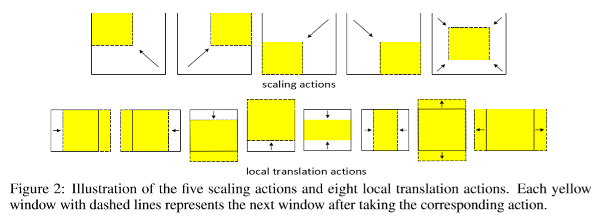
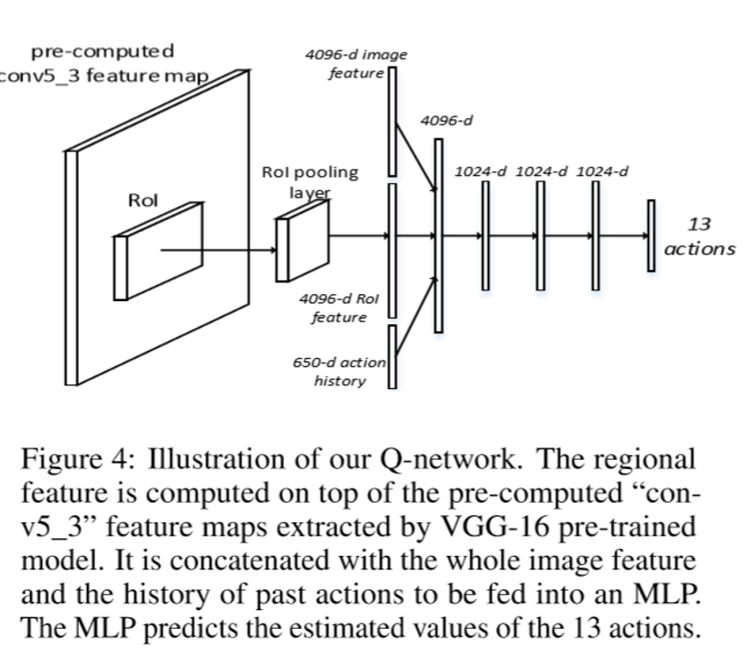
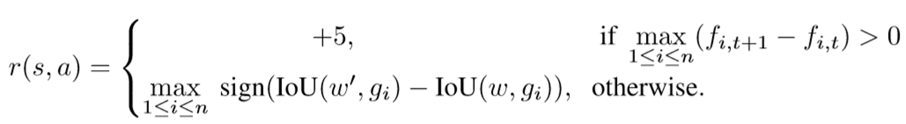
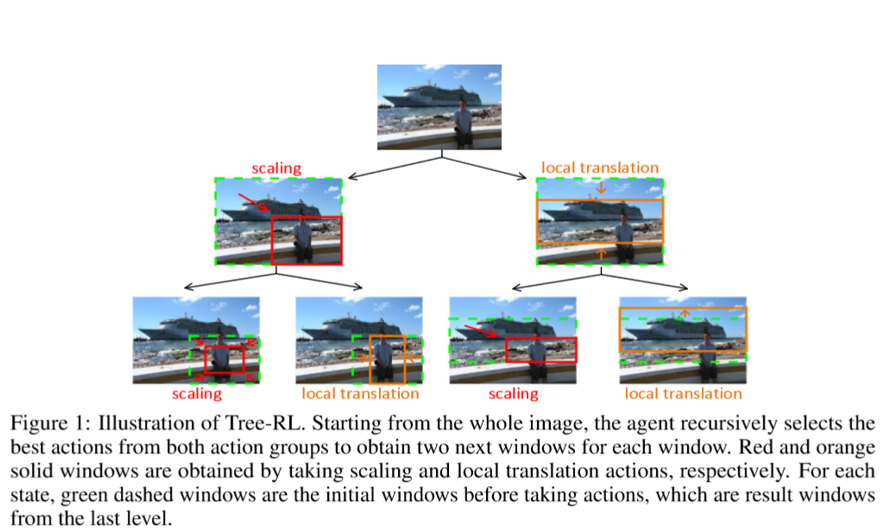
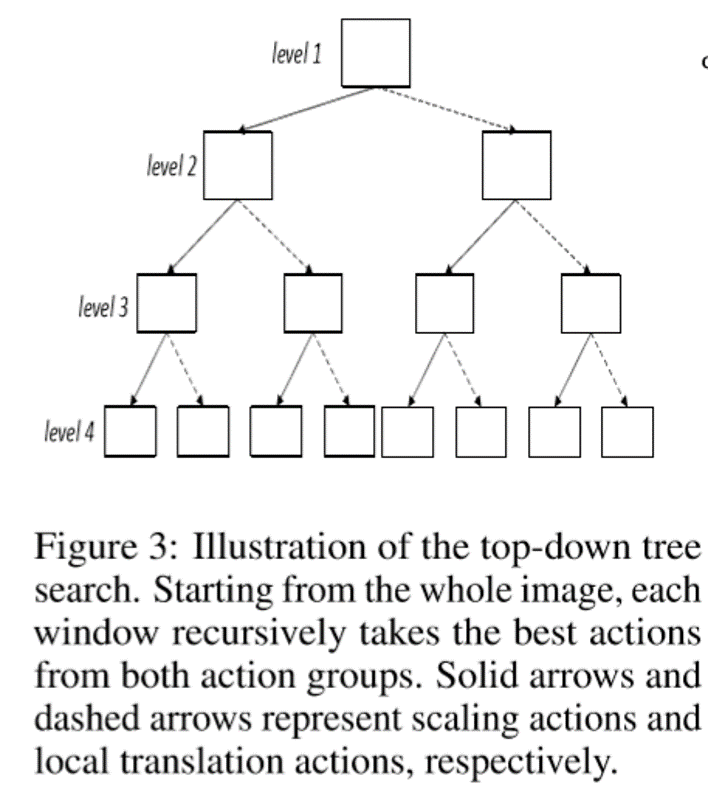
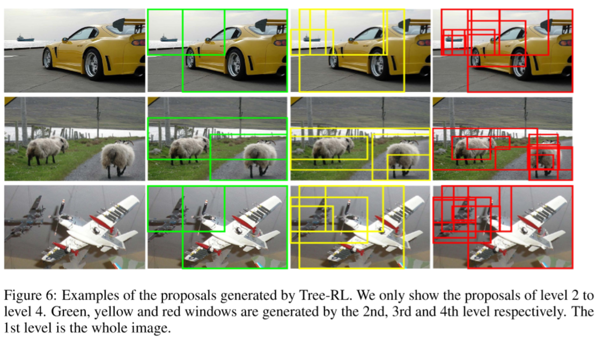
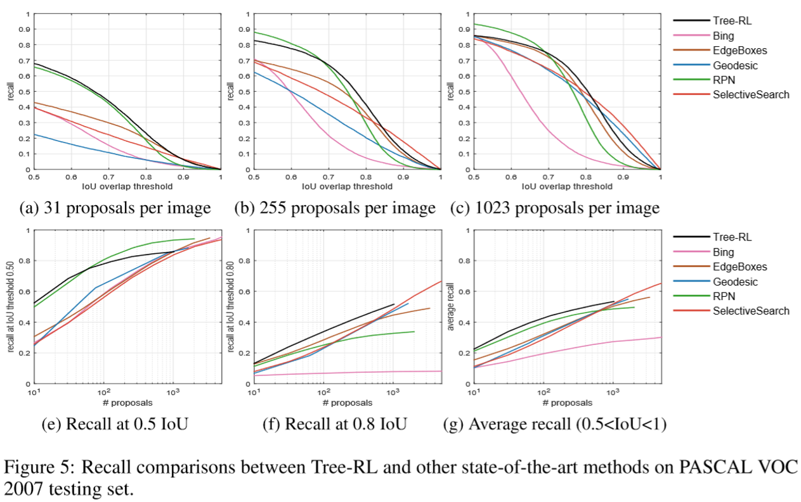
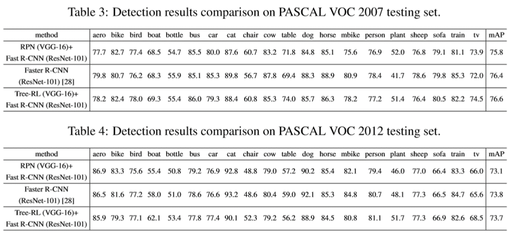

Motivation:
current methods:
Most of current object detection methods only use local image patch independently. However, the critical correlation cues among different proposals (e.g., relative spatial layouts or semantic correlations) are often ignored.
Reinforcement Learning
In this paper, in order to exploit global interdependency among objects, they propose a Tree-RL approach that learns to localize multiple objects sequentially based on both the current observation and historical search paths.
Reinforcement Learnin Recall

To form a reinforcement learning frame, We need to define 3 components:
Action
State
Reward
Definition of Actions

There are 13 actions being divided into two group. The first group include 5 scaling actions, the second include 8 local translation actions.
Definition of State
States: concatenation of three components:
1.the feature vector of the current window,
2.the feature vector of the whole image 3.the history of taken actions.

Definition of Reward

Notes:
1.The first key reward stimulation +5 is given to those actions which cover any ground-truth objects with an IoU greater than 0.5 for the first time. (The f is defined that when IoU(w,g)>0.5, f=+1; otherwise f=-1.)
2.The second item means if the next window’s IoU(w’,g) is bigger than current’s IoU(w,g), r=+1, which means the window get closer to the ground truth; otherwise r=-1.
Tree Structured Search


This is the most different point with previous paper about rl for object detection.
The Agent in this paper will select a best actions from two action group. The left is scaling action, the right is local translation action.
And they will set the max level of the tree. For example, when setting the level equals to 4, there will be 15 proposals in the tree. And then these proposals will be put into a final classifier, which is similar to other proposal method.
Experiments
Visualization

Recall Comparison to Other Object Proposal Algorithms

Detection mAP Comparison to Faster R-CNN

Here, they combined Tree_RL as proposal method with Fast RCNN to get the detection results.
And they compare it with RPN + Fast RCNN and Faster RCNN method. We can see this paper score better than RPN but close to Faster R-CNN. But we should consider that Tree-RL only use a VGG-16 because of the limitation of computation.